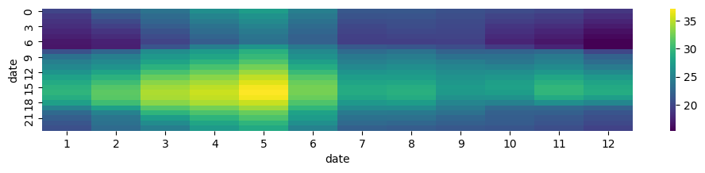
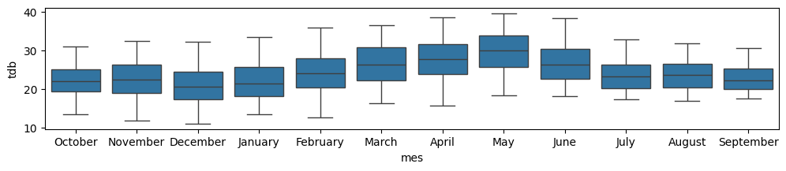

import pandas as pd
import seaborn as sns
import matplotlib.pyplot as plt11 Seaborn
f = "../data/ClimaLab_2023-10-27_2025-04-30.parquet"
tmx = pd.read_parquet(f)
tmx.info()<class 'pandas.core.frame.DataFrame'>
DatetimeIndex: 79036 entries, 2023-10-27 16:40:00 to 2025-04-30 00:00:00
Data columns (total 11 columns):
# Column Non-Null Count Dtype
--- ------ -------------- -----
0 dhi 39186 non-null float64
1 dni 39043 non-null float64
2 ghi 39104 non-null float64
3 p_atm 79036 non-null float64
4 rain_acc 79036 non-null float64
5 rh 79036 non-null float64
6 solar_altitude 79036 non-null float64
7 tdb 79036 non-null float64
8 uv 79036 non-null float64
9 wd 79036 non-null float64
10 ws 79036 non-null float64
dtypes: float64(11)
memory usage: 7.2 MBtmx.index.month_name()Index(['October', 'October', 'October', 'October', 'October', 'October',
'October', 'October', 'October', 'October',
...
'April', 'April', 'April', 'April', 'April', 'April', 'April', 'April',
'April', 'April'],
dtype='object', name='date', length=79036)tmx2024 = tmx[tmx.index.year == 2024].copy()
tmx2024_horario = tmx2024.tdb.resample("h").max().copy()
tdb_heatmap = tmx2024_horario.groupby(
by=[
tmx2024_horario.index.month,
tmx2024_horario.index.hour]
).mean().unstack().T
tdb_heatmap| date | 1 | 2 | 3 | 4 | 5 | 6 | 7 | 8 | 9 | 10 | 11 | 12 |
|---|---|---|---|---|---|---|---|---|---|---|---|---|
| date | ||||||||||||
| 0 | 19.855806 | 22.210000 | 23.666774 | 26.029000 | 27.401290 | 24.646333 | 21.291935 | 21.248710 | 20.750667 | 20.318387 | 19.956000 | 18.789032 |
| 1 | 19.075806 | 21.249286 | 22.894194 | 25.174333 | 26.405806 | 24.049333 | 20.897419 | 21.000645 | 20.473000 | 19.732903 | 19.239667 | 18.223226 |
| 2 | 18.565806 | 20.273214 | 22.337742 | 24.334333 | 25.687742 | 23.453000 | 20.463226 | 20.622581 | 20.212333 | 19.278387 | 18.810000 | 17.567742 |
| 3 | 18.227742 | 19.526429 | 21.666129 | 23.567667 | 24.965161 | 22.915000 | 20.036129 | 20.400000 | 20.109000 | 18.740645 | 18.176000 | 16.937097 |
| 4 | 17.727097 | 18.635714 | 20.926774 | 22.976333 | 24.266452 | 22.467000 | 19.728710 | 20.118065 | 19.875667 | 18.350000 | 17.626000 | 16.300323 |
| 5 | 17.296129 | 18.077143 | 20.316129 | 22.367667 | 23.711935 | 22.071667 | 19.502903 | 19.748710 | 19.706333 | 17.951613 | 17.222000 | 15.818710 |
| 6 | 16.787742 | 17.385714 | 19.708065 | 21.725667 | 23.451935 | 22.024000 | 19.417419 | 19.438065 | 19.516000 | 17.536129 | 16.712333 | 15.365806 |
| 7 | 16.602581 | 17.290345 | 20.979677 | 24.571000 | 26.739355 | 24.158333 | 21.366774 | 21.104839 | 20.465333 | 19.054839 | 17.571667 | 15.417097 |
| 8 | 20.759355 | 22.426207 | 25.960000 | 27.223667 | 29.138065 | 25.731333 | 22.978387 | 23.556129 | 22.180667 | 22.256774 | 22.721333 | 19.876129 |
| 9 | 23.475161 | 24.703793 | 26.959355 | 28.200000 | 29.973548 | 26.498000 | 24.160968 | 24.543226 | 23.519333 | 23.470645 | 24.208667 | 22.083548 |
| 10 | 24.632581 | 25.572759 | 27.964839 | 29.400667 | 31.147742 | 27.544333 | 24.777742 | 25.280323 | 24.549333 | 23.996452 | 24.807333 | 23.096129 |
| 11 | 25.500645 | 26.553448 | 29.235484 | 30.764000 | 32.458065 | 28.747333 | 25.639677 | 26.041290 | 25.387667 | 25.114516 | 25.796667 | 24.353548 |
| 12 | 26.643226 | 28.049655 | 30.776129 | 32.102000 | 33.835484 | 30.133667 | 26.639032 | 26.871935 | 25.933000 | 26.121613 | 26.999333 | 25.706452 |
| 13 | 27.736452 | 29.306897 | 32.078065 | 33.268667 | 35.066774 | 31.310333 | 27.437419 | 27.431290 | 26.506333 | 26.916129 | 28.241667 | 27.036129 |
| 14 | 28.618710 | 30.338621 | 33.227097 | 34.235000 | 36.106452 | 32.148667 | 28.077742 | 28.239677 | 26.866333 | 27.598387 | 29.137000 | 27.979032 |
| 15 | 29.280645 | 31.301379 | 34.062903 | 34.966000 | 36.845806 | 32.598000 | 28.573871 | 28.886452 | 27.185000 | 27.760645 | 29.713333 | 28.495484 |
| 16 | 29.481935 | 31.634828 | 34.420645 | 35.361000 | 37.129355 | 32.582333 | 28.672258 | 29.112258 | 27.028000 | 27.413226 | 29.574000 | 28.786774 |
| 17 | 28.901613 | 31.481034 | 34.311613 | 35.170333 | 36.740645 | 32.173000 | 28.182903 | 28.664516 | 26.260333 | 26.410645 | 28.548333 | 27.485161 |
| 18 | 27.572581 | 30.358966 | 33.256452 | 34.384000 | 35.330645 | 31.040667 | 26.929032 | 27.313226 | 25.279667 | 24.860968 | 26.096667 | 25.344194 |
| 19 | 25.001290 | 27.545862 | 31.348065 | 32.456000 | 33.972581 | 29.677333 | 25.657097 | 25.804839 | 24.214667 | 22.807742 | 22.699667 | 22.178065 |
| 20 | 22.836774 | 24.907241 | 29.540968 | 30.934333 | 32.055161 | 27.927333 | 24.232581 | 24.137097 | 23.375000 | 22.051613 | 21.920000 | 21.123548 |
| 21 | 21.865484 | 23.832759 | 27.275161 | 29.411667 | 30.971290 | 27.196000 | 23.484839 | 23.412903 | 22.435667 | 21.786129 | 21.280667 | 20.565484 |
| 22 | 21.200000 | 23.458571 | 25.900968 | 28.118667 | 29.490323 | 26.102667 | 22.823226 | 22.558387 | 21.972333 | 21.612903 | 20.994000 | 20.182258 |
| 23 | 20.646774 | 22.894286 | 24.616129 | 27.143333 | 28.500323 | 24.994667 | 21.967419 | 21.727097 | 21.248333 | 21.083548 | 20.517000 | 19.664194 |
# Draw a heatmap with the numeric values in each cell
f, ax = plt.subplots(figsize=(12, 2))
sns.heatmap(tdb_heatmap, cmap="viridis")
tmx["mes"] = tmx.index.month_name()
tmx| variable | dhi | dni | ghi | p_atm | rain_acc | rh | solar_altitude | tdb | uv | wd | ws | mes |
|---|---|---|---|---|---|---|---|---|---|---|---|---|
| date | ||||||||||||
| 2023-10-27 16:40:00 | NaN | 443.2 | 238.0 | 873.2120 | 17.1 | 61.14 | 18.644204 | 28.07 | 0.018 | 226.50 | 1.569 | October |
| 2023-10-27 16:50:00 | NaN | NaN | 187.5 | 873.2559 | 6.3 | 62.76 | 16.430841 | 27.78 | 0.014 | 171.60 | 1.631 | October |
| 2023-10-27 17:00:00 | 1360.00 | NaN | 167.5 | 873.2161 | 27.8 | 64.26 | 14.204506 | 28.00 | 0.011 | 314.70 | 0.479 | October |
| 2023-10-27 17:10:00 | 74.14 | 520.5 | 163.1 | 873.1834 | 5.4 | 66.82 | 11.967374 | 28.69 | 0.009 | 163.60 | 0.504 | October |
| 2023-10-27 17:20:00 | 67.62 | 269.2 | 126.1 | 873.2775 | 1.5 | 60.92 | 9.722172 | 28.77 | 0.006 | 260.30 | 0.964 | October |
| ... | ... | ... | ... | ... | ... | ... | ... | ... | ... | ... | ... | ... |
| 2025-04-29 23:20:00 | NaN | NaN | NaN | 861.8378 | 0.0 | 43.17 | -52.087453 | 26.46 | 0.000 | 164.30 | 0.808 | April |
| 2025-04-29 23:30:00 | NaN | NaN | NaN | 861.8724 | 0.0 | 46.12 | -53.192891 | 26.30 | 0.000 | 337.00 | 0.518 | April |
| 2025-04-29 23:40:00 | NaN | NaN | NaN | 861.8623 | 0.0 | 46.82 | -54.162933 | 25.57 | 0.000 | 70.61 | 1.358 | April |
| 2025-04-29 23:50:00 | NaN | NaN | NaN | 861.9176 | 0.0 | 47.47 | -54.986312 | 25.59 | 0.000 | 133.60 | 0.625 | April |
| 2025-04-30 00:00:00 | NaN | NaN | NaN | 861.9011 | 0.0 | 46.62 | -55.652470 | 25.33 | 0.000 | 155.30 | 1.479 | April |
79036 rows × 12 columns
f, ax = plt.subplots(figsize=(12, 2))
sns.boxplot(x="mes", y="tdb",data=tmx)